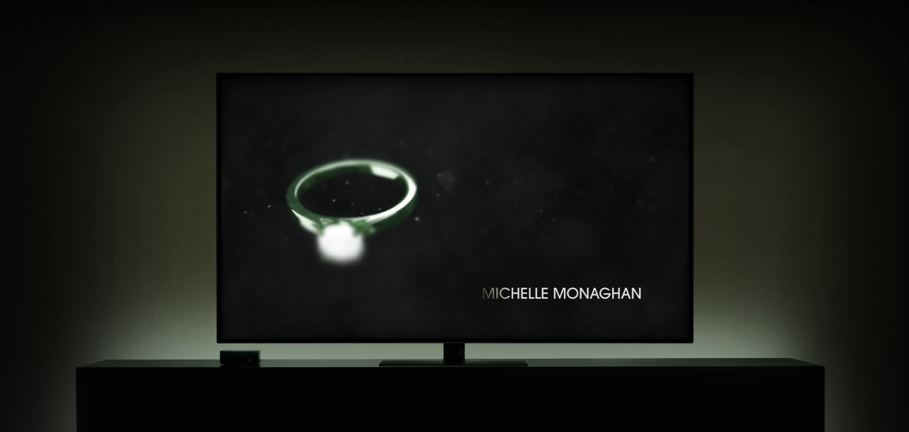
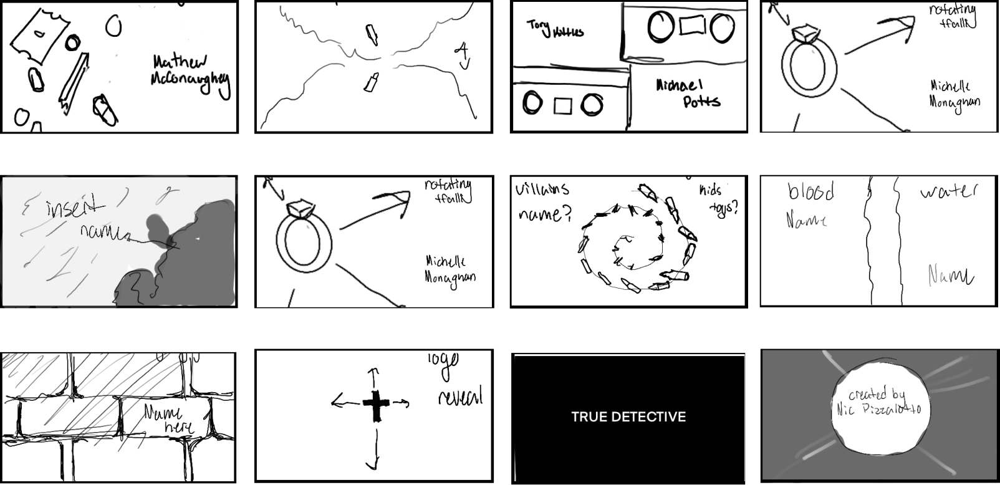
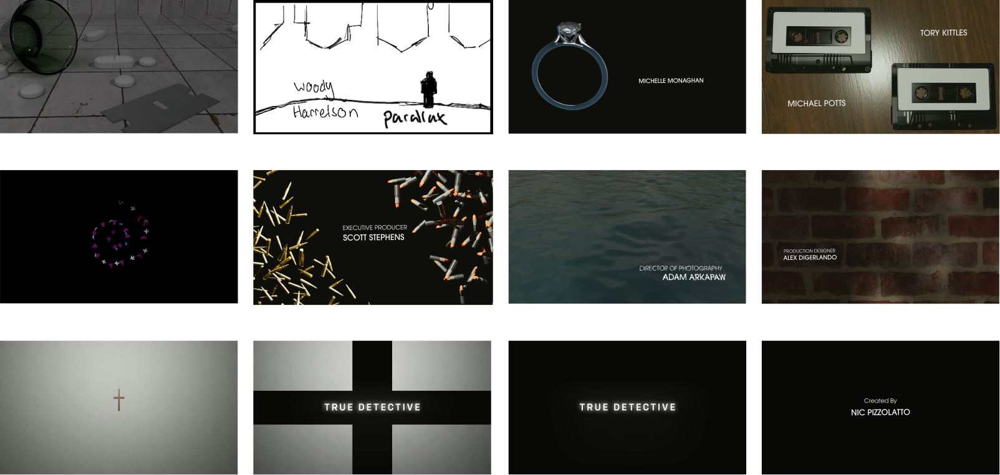
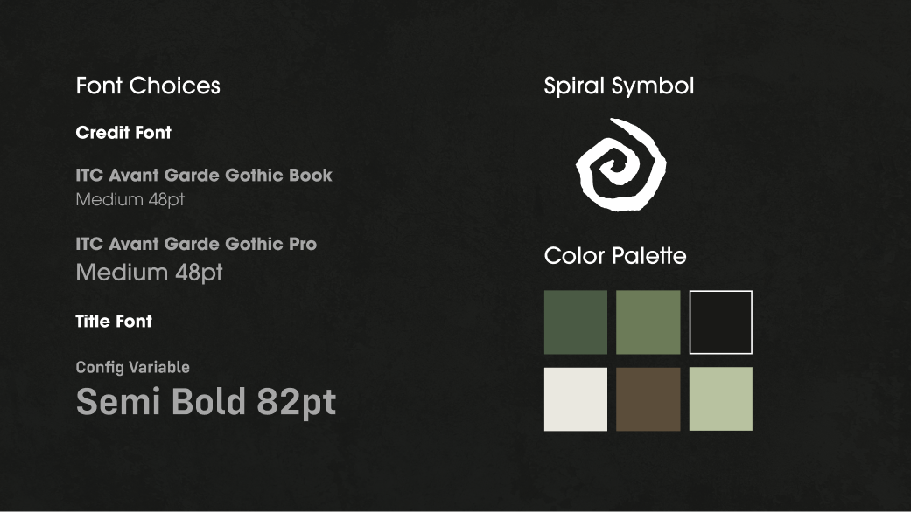
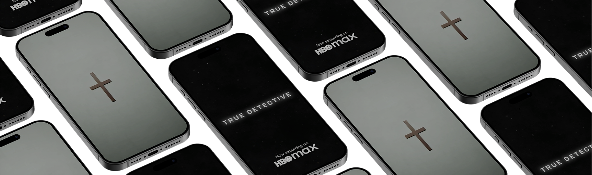
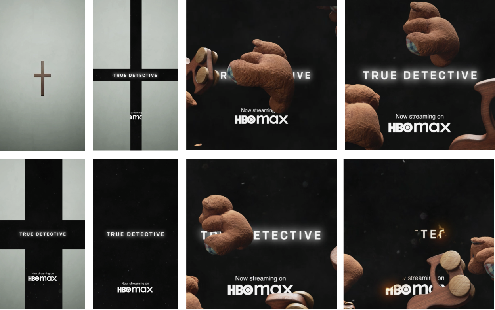
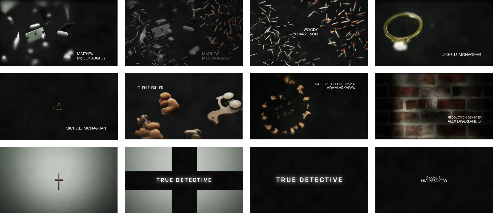

True Detective Title Sequence
Role
Sole Designer
Software
After Effects, Cinema 4D, Figma, Procreate.
Skills
Motion Design, 3D Rendering, Compositing.
Duration
6 Weeks
Goal
I set out to reimagine the title sequence for HBO’s critically acclaimed True Detective, drawing on the show’s themes and imagery to prepare the viewer before the first scene.
Approach
Built in 3D, the sequence captures the essence of the series through its lighting, color and setting. Shades of green accentuate the Louisiana landscape, grounding the piece in its time period while evoking decay, corruption and the sinister nature of the story.
Design Process
Step 01
Sketches
Quick sketches map out the core idea behind each credit, tying every actor to their character’s role in the story.


Step 02
Design Board
Twelve early renders work out each sketch, settling the framing and lighting of the 3D elements.
Step 03
Style Guide
Locking in the fonts and colors before production kept the process smooth and predictable.

Final Looks


9:16 Social1:1 Social
Outputs
Final Designs
The final designs aim for a slow, ominous feeling while carrying the show’s central themes, with careful attention to the particles, blurs and glows.
The final outputs are the 16:9 title sequence plus square and vertical social ads. It was rewarding to work beyond the main video and think about how these assets could help market the show.

16:9 Main
What I Learned
What stood out
Narrative-driven visuals were the most important part of this project. Compositing took up a large share of the workload and taught me the most: I learned how to bring grit to my clean 3D renders so they feel true to the first season.
What I'd change
Looking back, there is room to improve. Because I had to use a royalty-free song, the music feels constrained. Music is a crucial choice in a title sequence, and I would have liked it to complement the visuals with more distinction.